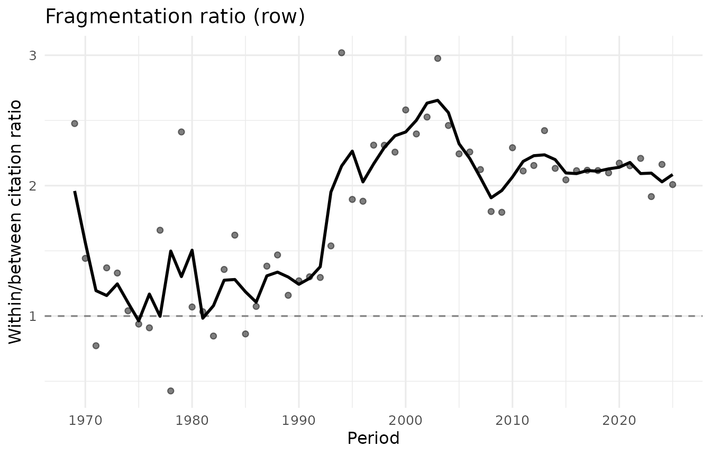
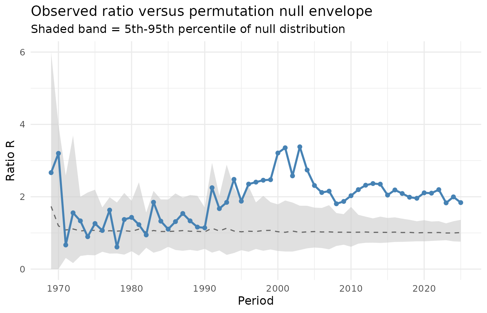
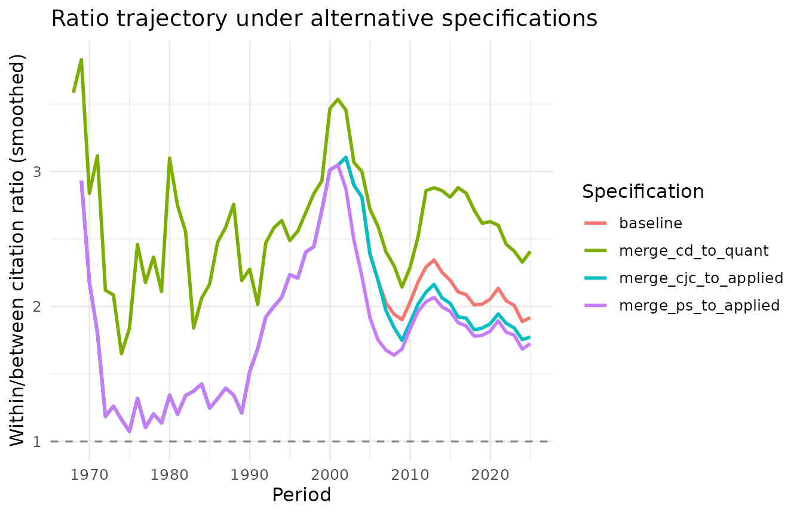
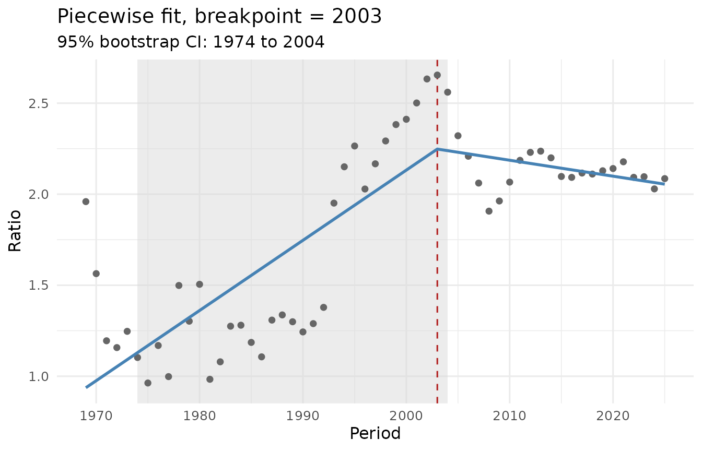
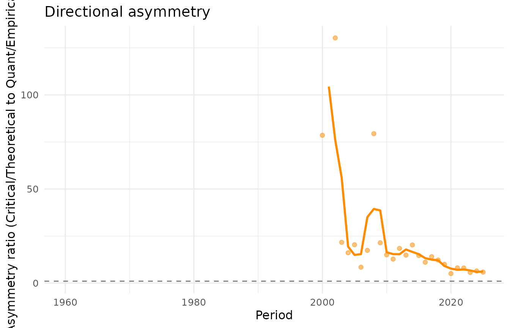

Overview
The citefrag package measures within-group versus
between-group citation preference in longitudinal citation networks.
This vignette walks through the full analytical pipeline using the
bundled 23-journal criminology panel as an example. The same workflow
applies to any citation panel with prior group assignments.
Setup
library(citefrag)
data(criminology_panel)
criminology_panel
#> <citation_panel>
#> Periods: 66 (1960 to 2025)
#> Nodes: 23
#> Groups: 4 (Quant/Empirical, Applied/Practice, Intl/Comparative, Critical/Theoretical)
#> Sizes: time-varyingThe panel contains 66 annual citation matrices for 23 journals, grouped into 4 traditions.
Stage 1: The fragmentation ratio
The central measurement of the package is the pair-averaged within-between citation ratio. For each year, it compares the mean number of citations between journals within the same tradition to the mean number between journals in different traditions.
fr <- fragmentation_ratio(criminology_panel, normalise = "row")
print(fr)
#> <fragmentation_ratio>
#> Periods: 57 (1969 to 2025)
#> Normalisation: row
#> Smoothing: 3-period centred moving average
#> Peak: R = 3.02 in 1994
#> Final: R = 2.01 in 2025
plot(fr)
The normalise argument controls how size differences
between journals are handled. The four options are "raw",
"row", "target", and
"article_pair"; each answers a slightly different question.
Row-normalisation gives each journal equal weight regardless of its
publication volume.
Stage 2: Significance testing
A permutation test evaluates whether the observed ratio is larger than what would be expected under random assignment of journals to traditions, holding the matrix and group sizes fixed.
pt <- fragmentation_test(criminology_panel, n_perm = 1000L, seed = 42L)
print(pt)
#> <fragmentation_test>
#> Normalisation: raw
#> Periods tested: 57
#> 2025: observed R = 1.84, null mean = 1.01, z = 4.02, p = 0.0060
plot(pt)
The test is exact when the number of distinct permutations is feasible to enumerate, and Monte Carlo otherwise.
Stage 3: Robustness checks
Two kinds of robustness check are built in. The first reruns the analysis under alternative group specifications, testing whether the trajectory depends on where the group boundaries are drawn. The second restricts the panel to a fixed subset of nodes, testing whether the trajectory is driven by the entry of new nodes.
data(criminology_alternatives)
rb <- fragmentation_robustness(
criminology_panel,
alternatives = criminology_alternatives
)
print(rb)
#> <fragmentation_robustness>
#> Normalisation: raw
#> Specifications: 4 (including baseline)
#>
#> Correlations with baseline:
#> merge_cd_to_quant r = 0.652 (raw), 0.754 (smoothed)
#> merge_ps_to_applied r = 0.967 (raw), 0.963 (smoothed)
#> merge_cjc_to_applied r = 0.992 (raw), 0.990 (smoothed)
plot(rb)
Stage 4: Structural break detection
A piecewise linear regression with a grid-searched breakpoint and bootstrap confidence interval identifies where (if anywhere) the trajectory changes character.
cp <- fragmentation_changepoint(fr, seed = 42L, n_boot = 500L)
print(cp)
#> <fragmentation_changepoint>
#> Breakpoint: 2003 (95% bootstrap CI: 1974 to 2004)
#> Slope before: +0.0386 per period (p = < 0.0001)
#> Slope after: -0.0088 per period (p = 0.2196)
#> R-squared: 0.671
plot(cp)
Directional asymmetry
The fragmentation ratio is symmetric by construction: it does not
reveal which group cites which. The asymmetry() function
addresses this, measuring how unevenly citations flow between two
specified groups over time.
asy <- asymmetry(
criminology_panel,
from_group = "Critical/Theoretical",
to_group = "Quant/Empirical"
)
print(asy)
#> <fragmentation_asymmetry>
#> From group: Critical/Theoretical
#> To group: Quant/Empirical
#> Periods: 66
#> 2025: ratio = 5.84 (share 0.233 vs 0.040)
plot(asy)
#> Warning: Removed 41 rows containing missing values or values outside the scale range
#> (`geom_line()`).
#> Warning: Removed 41 rows containing missing values or values outside the scale range
#> (`geom_point()`).